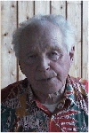

Personakt
Antavla
Bo Erling
Stellan
Lundström
* 1950-10-05 Norsjö 3:20, Arnberg 30, Norsjö, Norsjö fs, Norsjö sn

Erik Konrad
Erling
Lundström
* 1916-04-03 Tvärliden, Norsjö sn
† 2016-06-11 Klockarbo, Norsjö, Norsjö fs, Norsjö sn
Konrad Lundström
* 1878-03-03 Medle, Skellefteå sn
† 1959-02-11 Tvärliden 1:5, Norsjö fs, Norsjö kn
Per Lundström
* 1849-07-03 Inre Ursviken, Skellefteå sn
† 1893-02-03 Medle, Skellefteå sn
>>
Ida
Margareta Åström
* 1849-09-02 Bergsbyn, Skellefteå sn
† 1899-01-20 Medle, Skellefteå sn
Kristina
(Stina) Josefina Lyxell
* 1880-01-17 Tvärliden, Norsjö sn
† 1976-02-15 Tvärliden 1:5, Norsjö fs, Norsjö kn
Mary
Lilian Ingegärd Nyström
* 1921-05-18 Arnberget, Norsjö sn
† 1981-10-02 Arnberget 1, 5024, Norsjö, Norsjö fs, Norsjö kn
Bror
Konrad Nyström
* 1870-12-27 Norsjö 3, Arnberg, Norsjö sn
† 1940-06-04 Arnberg, Norsjö sn
Nils Petter Eriksson Nyström
* 1833-04-20 Norsjö 3, Arnberg, Norsjö sn
† 1896-07-31 Norsjö 3, Arnberg, Norsjö sn
>>
Sara Margareta (Greta) Zakariasdotter
* 1835-08-20 Holktjärn, Norsjö sn
† 1908-04-30 Norsjö 3, Arnberg, Norsjö sn
>>
Eva
Charlotta Antonsdotter
* 1878-02-23 Bjurfors, Lycksele sn
† 1961-10-23 Arnberg, Norsjö sn
Anton Andersson
* 1838-08-03 Berglunda, Lycksele sn
>>
Matilda Johansdotter Almström
* 1839-04-13 Tallbacka, Jörns fs, Jörns sn
† 1908-06-29 Bjurfors, Lycksele sn
<< Startsida


{kind=link}